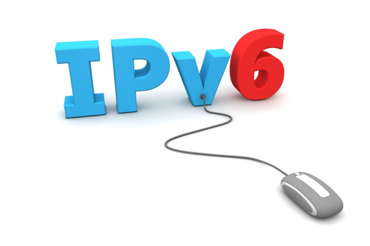
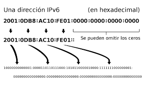

IPv6
IPv6 is an upgrade to the IPv4 protocol, designed to solve the problem of address exhaustion. Its development began in December 1998 when Steve Deering and Robert Hinden, employees of Cisco and Nokia published a formal specification of the protocol through an RFC1 and its implementation continues.Designed by Steve Deering of Xerox PARC IPv6 is intended to replace IPv4, whose limit on the number of allowable network addresses is beginning to restrict the growth of the Internet and its use, especially in China, India, and other densely populated Asian countries. The new standard seeks to improve the service globally; for example, providing future phone cells and mobile devices with their own permanent addresses.
Changes and new features
In many respects, IPv6 is a conservative extension of IPv4, keeping the most used functions,
others that are not so important or little used have been eliminated or made optional, in addition
new features have been added. Most transport protocols - and applications - need little or no change
to operate over IPv6; the exceptions are application protocols that integrate network layer addresses,
such as FTP or NTP.IPv6 specifies a new packet format, designed to minimize packet header processing.
Because the headers of IPv4 and IPv6 packets are significantly different, the two protocols are not
interoperable.
Some of the most relevant changes from IPv4 to IPv6 are:
- Extended addressing capability
- State-Free Address Autoconfiguration (SLAAC)
- Multicast
- Mandatory Network Level Security
- Simplified processing on routers
- Mobility
- Improved support for extensions and options
IPv6 addressing
The biggest change from IPv4 to IPv6 is the length of the network addresses. IPv6 addresses, defined in RFC 2373 and RFC 2374 but was redefined in April 2003 in RFC 3513, are 128 bits; this corresponds to 32 hexadecimal digits, which are typically used to enter IPv6 addresses, as described in the next section.The number of possible IPv6 addresses is 2128 ≈ 3.4 x 1038. This number can also be represented as 1632, with 32 hexadecimal digits, each of which can take 16 values
IPv6 (advantages and disadvantages)
Advantage:
To measure the number of IP addresses that IPV6 can provide, it is enough to say that this protocol
can assign a quantity close to 670 billion addresses for each square millimeter of the earth's
surface, thereby allowing each person to assign it a unique IP to each of your devices. Another
advantage of using IPV6 is its security levels, since it includes within its specifications
information encryption processes and the verification of the authenticity of its origin;
IPV6 allows the use of Jumbograms (larger data packets, up to 64 bits).
Disadvantages:
The need to extend permanent support requires an IPv4 address or some kind of NAT network address
translation on the gateway routers. On the other hand at the architectural level, IPv6 addresses are
more difficult to memorize. Most networks are IPv4, so the full implementation of IPv6 would be very
expensive and would take a long time, meanwhile, the implementation of the transition mechanisms for
the interaction of the 2 networks is required.
IPv6 adaptation
Although IPv6 was created with the need to increase the number of addresses, since IPv4 addresses were starting to run out, it is not adapting very well. From the beginning his adaptation was not at the rate that was expected and desired. If it is true that there have been periods of time that his adaptation grew exponentially, but these periods were short-lived and he slowed down rapidly. Many providers, companies and users do not finish taking the step to IPv6 and remain in IPv4, due to the incompatibility between the two. Other causes of the absence of IPv6 is the reuse of IPv4 addresses, certain addresses that are not used are being sold to companies and organizations that need them. Due to this, their adaptation has slowed down a lot and may never be completed.